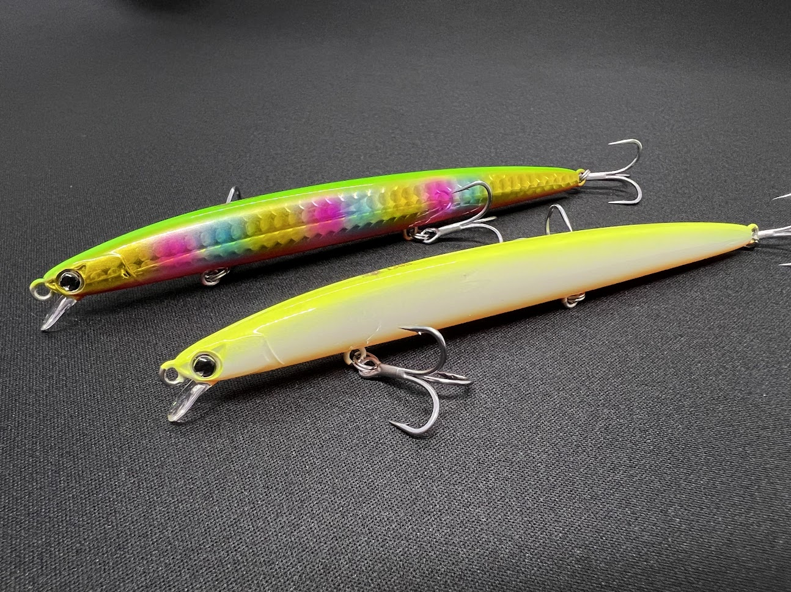
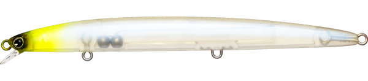
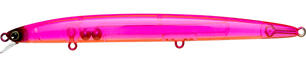
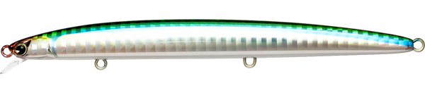

ko130s
ko130sはimaの名作ルアー。
一度廃盤になってから「釣れる！」というアングラーの強い声によって何度も復刻しているルアーです。

一度廃盤になってから「釣れる！」というアングラーの強い声によって何度も復刻しているルアーです。
- メーカー
- ima
（ima） - 長さ
- 130mm
- 重さ
- 12g
- タイプ
- シンキングミノー
- アクション
- ローリング
- ターゲット
魚種 - シーバス
- 発売日
- 2006年11月21日
ko130sの特徴・コンセプト
ko130sは、imaの名作ルアー。ミノー界で最細クラスの尖ったルアーです。
ko130sの使い方・得意な状況
バチ抜けシーズンで大活躍。 スレたフィールドでもローリングがやさしく誘います。
ワンポイント
人気カラー

チャートバックパール
ナイトゲームでのアピールが良い定番のカラー。

チャートヘッドテレサ
ナイトゲームでは定番カラー。

ピンクオレンジ
アピールも強く視認性も良い釣れるカラー。ばちシーズンでは無双

サヨリ
サヨリパターンではまるカラー。難しい時期にも釣れる一本
画像出典:ima公式HP
実釣インプレッション
imaの名作シーバスルアー
- KOMOMO
- SASUKE
- KOSUKE
- KOUME